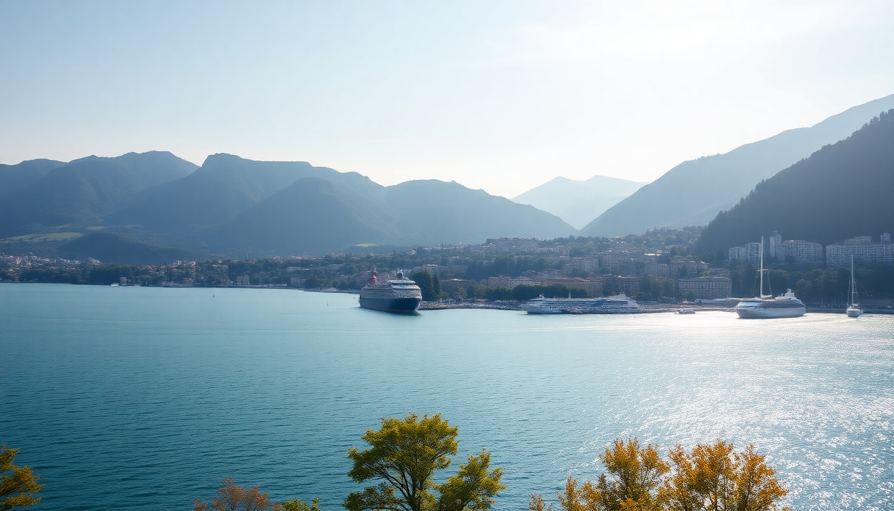

Best Beaches in Switzerland: Lake Geneva, Lugano & Locarno

I spent two weeks hopping between Swiss lakes last July, convinced that a landlocked country couldn’t have proper beaches. I was wrong. The beaches here aren’t ocean surf—they’re manicured lakefront lidos with clear water, mountain backdrops, and surprisingly good infrastructure. If you’re planning a trip that mixes city sightseeing with actual swimming, here’s where to go and what to skip.
What are the best beaches on Lake Geneva?
Lake Geneva is huge—so the beach experience changes dramatically depending on which shore you pick. On the northern (Swiss) side, Geneva itself has the most accessible options, but they get packed fast. We found the real gems a short train ride away.
Plage des Eaux-Vives in central Geneva is the most convenient. It’s a paid beach (about 8 CHF entry) with a long pier, grass lawn, and pebble shore. Water shoes are non-negotiable here—the stones are brutal on bare feet. The view of the Jet d’Eau from the water is worth the entry fee.
Bains des Pâquis is the opposite: gritty, local, and free (except for the sauna/hammam). It’s a rocky peninsula jutting into the lake, with a diving platform, a tiny sand patch, and a café that does decent fondue. I liked it more than Eaux-Vives because it felt like a real Geneva hangout, not a tourist setup.
Plage de la Savonnière in Lausanne (20 minutes by train from Geneva) is our pick for a proper sandy beach. It’s a long stretch of imported sand with shallow water, perfect for kids. The restaurant there, Le Bateau, does solid grilled fish and cold white wine.
- Plage des Eaux-Vives — Central Geneva, pebble beach, 8 CHF entry
- Bains des Pâquis — Free, local vibe, diving platform
- Plage de la Savonnière — Sandy, family-friendly, in Lausanne
- Plage de la Perle du Lac — Smaller, free, good for a quick dip near the city center
Which beaches in Lugano are worth the trip?
Lugano surprised me. The water in Lake Lugano is warmer than Lake Geneva by a few degrees, and the beaches sit right under the Monte Brè and Monte San Salvatore peaks. The vibe is Italian-lite: espresso bars on the sand, people swimming until 8 PM, and a general lack of Swiss stiffness.
Lido di Lugano is the main public beach. It’s a large complex with two pools (one Olympic-sized), a children’s area, and direct lake access via a concrete platform. Entry is 10 CHF. We went on a Tuesday and it was busy but not insane. The grass lawn is where everyone spreads towels—bring a picnic because the café is overpriced and mediocre.
Parco Ciani isn’t technically a beach, but the lakeside lawns and small pebble shore make it a solid spot for an afternoon swim. It’s free, shaded by old trees, and a two-minute walk from the city center. We swam here after lunch at Ristorante Orologio (try the risotto with porcini) and dried off on the grass.
For something quieter, take the ferry to Gandria. The tiny village has a concrete lido called Lido di Gandria that’s basic but charming—just a platform and a ladder into deep water. The ferry ride itself is worth the 5 CHF.
- Lido di Lugano — Paid, pools, lake access, family-friendly
- Parco Ciani — Free, central, grassy, good for a quick swim
- Lido di Gandria — Quiet, ferry-accessible, basic but beautiful
- Lido San Domenico — Small, less crowded, near the casino
Is Locarno the best beach town in Switzerland?
Yes. Locarno on Lake Maggiore has the warmest water in Switzerland, a proper sandy beach, and a palm-tree promenade that feels more Mediterranean than Alpine. If you only have time for one lake day, make it Locarno.
Lido di Locarno is the standout. It’s a sprawling beach complex with a huge sand section, multiple pools, a waterslide, and volleyball courts. Entry is 12 CHF. We spent an entire Saturday here and didn’t get bored. The water temperature in July hit 26°C—swimmable without that initial gasp. The on-site restaurant Ristorante Lido does passable pizza, but we walked five minutes to Osteria il Centro in town for better food.
Ascona, a 15-minute walk or quick bus ride from Locarno, has a string of free beaches along the lakefront. Spiaggia di Ascona is a narrow strip of sand and grass with views of the Brissago Islands. It’s less crowded than Lido di Locarno and has a more relaxed, grown-up feel. We saw people reading novels and drinking Aperol spritzes at 11 AM—no judgment.
Spiaggia di Ronco sopra Ascona is a hidden spot up the hill. It’s a small pebble beach with a diving platform, accessed by a steep path from the village. The view over the lake is absurd. Bring water and snacks because there’s nothing there but rocks and silence.
- Lido di Locarno — Best overall, sand, pools, warm water
- Spiaggia di Ascona — Free, relaxed, good for adults
- Spiaggia di Ronco sopra Ascona — Secluded, pebble, great views
- Brissago Islands — Ferry-accessible, botanical gardens, swimming spots
What about beaches near Zurich?
Zurich’s beaches are functional rather than beautiful. The lake is cold (19-22°C in summer) and the shores are mostly grass and concrete. But if you’re based in Zurich, you can still get a decent swim.
Strandbad Tiefenbrunnen is the best option in the city. It’s a large lido with a grass lawn, a wooden pier, and a separate children’s area. Entry is 8 CHF. The water is clear but chilly. We went on a hot Sunday and it was packed with families—get there before 10 AM to claim a spot.
Mythenquai is the other big lido, slightly closer to the city center. It has a 50-meter pool, a diving tower, and a restaurant. The lake access is via concrete steps, not sand. It’s fine for a quick dip after visiting the Kunsthaus Zurich, but don’t plan a beach day around it.
For a more scenic option, take the S-Bahn to Rapperswil (40 minutes from Zurich HB). The Strandbad Rapperswil has a long wooden pier, a sand volleyball court, and views of the Rapperswil castle. We preferred this to the city lidos—it felt like a mini-escape.
- Strandbad Tiefenbrunnen — Best city option, grass, pier
- Mythenquai — Pool, diving tower, convenient
- Strandbad Rapperswil — Scenic, castle views, train-accessible
- Seebad Utoquai — Wooden deck, no sand, very central
When is the best time to visit Swiss beaches?
July and August are the only reliable months for swimming. June can work if you’re brave, and September is a gamble—water temperatures drop fast after mid-August. We visited in early July and had perfect conditions: air temps around 30°C, water between 22-26°C depending on the lake.
Weekdays are significantly less crowded. Lido di Lugano on a Tuesday was half as busy as the same lido on a Saturday. If you’re on a tight schedule, aim for Monday-Thursday.
- July-August — Peak season, warmest water, busiest
- Late June — Possible but water still cool (18-22°C)
- Early September — Good weather, but water cooling quickly
- Weekdays — Far fewer crowds at all lidos
How do you get around to these beaches?
Swiss public transit makes lake-hopping easy. The SBB train network connects Geneva, Zurich, Lugano, and Locarno directly. For Lake Geneva beaches, take the S1 or IR trains along the north shore. For Lugano and Locarno, the Ceneri Base Tunnel means you’re there in under 2 hours from Zurich.
Ferries are the secret weapon. The Società Navigazione del Lago di Lugano runs boats between Lugano and Gandria for 5 CHF. On Lake Maggiore, the ferry from Locarno to the Brissago Islands costs 12 CHF round-trip. We used the Swiss Travel Pass for unlimited trains, boats, and buses—it paid for itself in three days.
- SBB trains — Geneva to Lausanne (20 min), Zurich to Lugano (1h45)
- Lake ferries — Lugano to Gandria, Locarno to Brissago Islands
- Swiss Travel Pass — Covers trains, boats, and buses
- Local buses — Bus #1 from Locarno to Ascona (10 min)
FAQ
Are Swiss beaches free? Most are paid lidos (8-12 CHF entry) with showers, changing rooms, and lifeguards. Free spots exist—like Bains des Pâquis in Geneva or Parco Ciani in Lugano—but they’re smaller and lack facilities. Bring cash; many lidos don’t accept cards for entry.
Do I need water shoes? Yes, especially on Lake Geneva. The shores are almost entirely pebble or concrete. Water shoes make a massive difference. I learned this the hard way at Plage des Eaux-Vives and limped for the rest of the day.
Can you swim in Swiss lakes in June? You can, but it’s cold. Lake Lugano and Lake Maggiore are the warmest (18-22°C in June). Lake Geneva and Lake Zurich stay below 20°C until July. If you’re okay with a quick shock, go for it. Otherwise, wait until July.
Conclusion
- Locarno’s Lido di Locarno is the best beach in Switzerland—warm water, sand, and good facilities.
- Bains des Pâquis in Geneva is the most authentic urban swim spot.
- Lido di Lugano is solid but gets crowded; Parco Ciani is a better free alternative.
- Zurich beaches are functional, not beautiful—skip them for Rapperswil if you have time.
- July and August are the only months for guaranteed comfortable swimming.